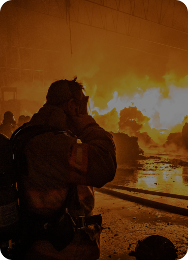
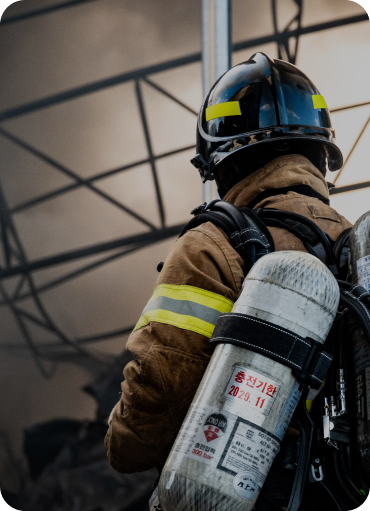
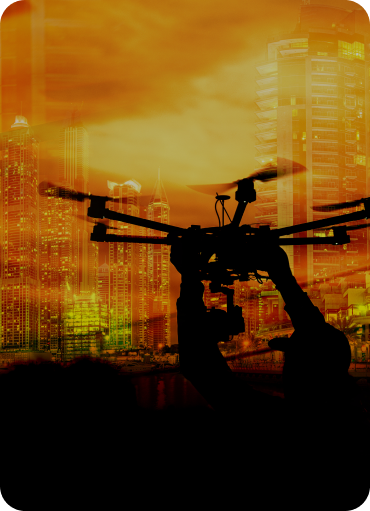
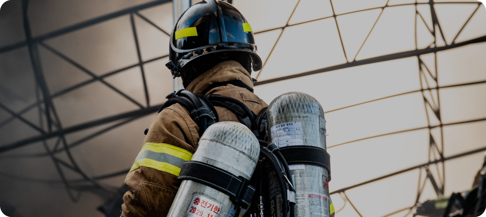
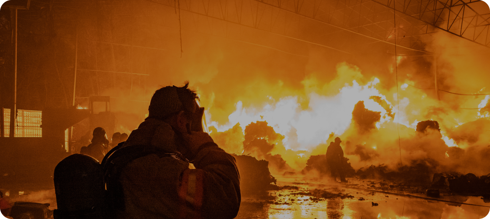
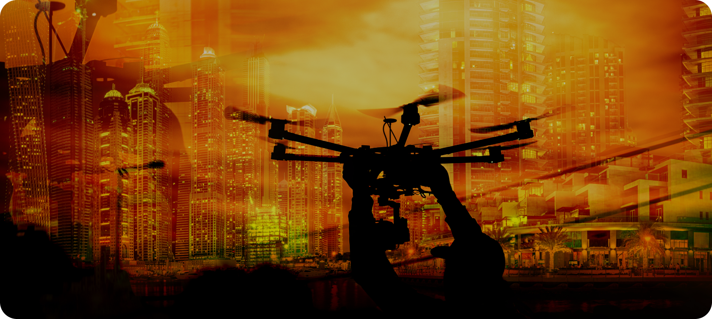

We Have
Passion
케이대응로봇은 도전과 혁신으로
재난안전로봇 분야의 글로벌 No. 1을 향해
나아갑니다.
세계 시장을 선도하는 로봇 전문기업으로
성장하겠습니다.
We Challenge
Limits
한계를 뛰어넘는 도전으로 불가능을 가능하게 만들고,
일상과 산업 현장의 더 안전한 미래를 열어갑니다.
We Make it
Possible
케이대응로봇은 혁신적인 로봇 기술로
가능성을 현실로 만듭니다.
재난안전로봇의 새로운 미래를 열어가겠습니다.



We Make it Possible
케이대응로봇은 혁신적인 로봇 기술로 가능성을 현실로 만듭니다.
재난안전로봇의 새로운 미래를 열어가겠습니다.
원격방수총
CROW - 40/65
화재 대응 현장의 안전성과 효율성을 높이는 무선 원격 방수 장비
CROW-40/65는 반복적이고 위험한 방수 작업을
무선 원격 제어로 수행할 수 있도록 설계된 전동식 방수 장비입니다.
원격 방수 사족 보행 로봇
(Unitree B2 / RBQ10)
지능형 스마트 원격 방수 사족 보행 로봇
4족 보행 플랫폼에 원격 방수총을 탑재해
위험한 화재 현장에서 탐색·이동·방수 임무를 수행할 수 있도록 설계된
지능형 화재 대응 로봇입니다.
PRODUCT & TECHNOLOGY


인명 탐지 레이더
연기와 벽체 등으로 시야 확보가 어려운 재난 환경에서도
UWB(Ultra-Wideband) 레이더를 활용해 인명을 탐지
- 초광대역(UWB) 기반 인명 탐지 기술
- 실시간 탐지 및 데이터 처리 기술
- 소방관 휴대 편의성을 고려한 경량 디자인(Hand-held Type)
스마트 무인 방수총 CROW-40S
AI기반 화점 자동조준 및 정밀 타격이 가능한
자립형 스마트 무인 방수총
- 저반동 저반발 방수총을 이용한 강력한 방수성능
(40mm : 1,000LPM, 65mm : 2,500LPM) - 복합 센서를 활용해 불길을 자동으로 추적,
여러 개의 화점을 동시에 감지하고 대응 - 정밀자동 조준 분사 제어로 90%이상의 화재 자동진압
농연 가시화 센서 / OWL-E
농연 환경 극복을 위한 가시성 향상 기술
- AI 기반 객체 탐지: 사람, 화점,
소화기, 주요 물체 인식 - 열화상 카메라, RGB 카메라, 인명탐지 센서 통합
VISION
로봇 기술의 선두주자로,
더 나은 미래를 함께 만들어갑니다.
MISSION
기술 혁신으로
귀하의 작업 효율과 안전을 최적화합니다.